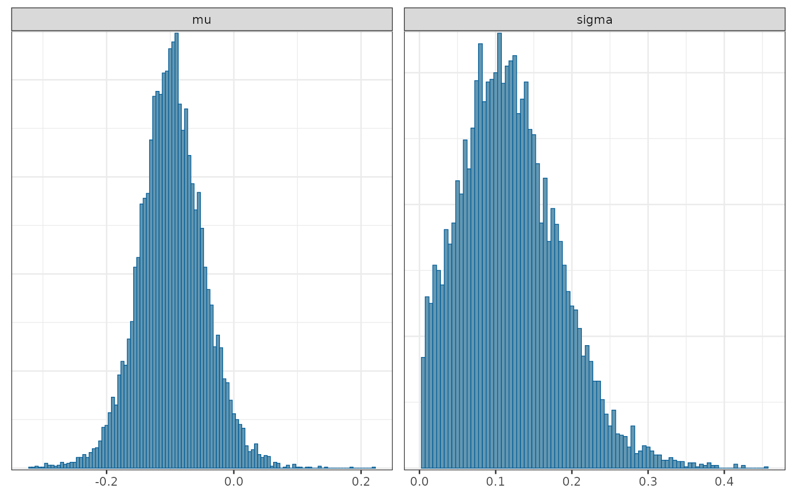
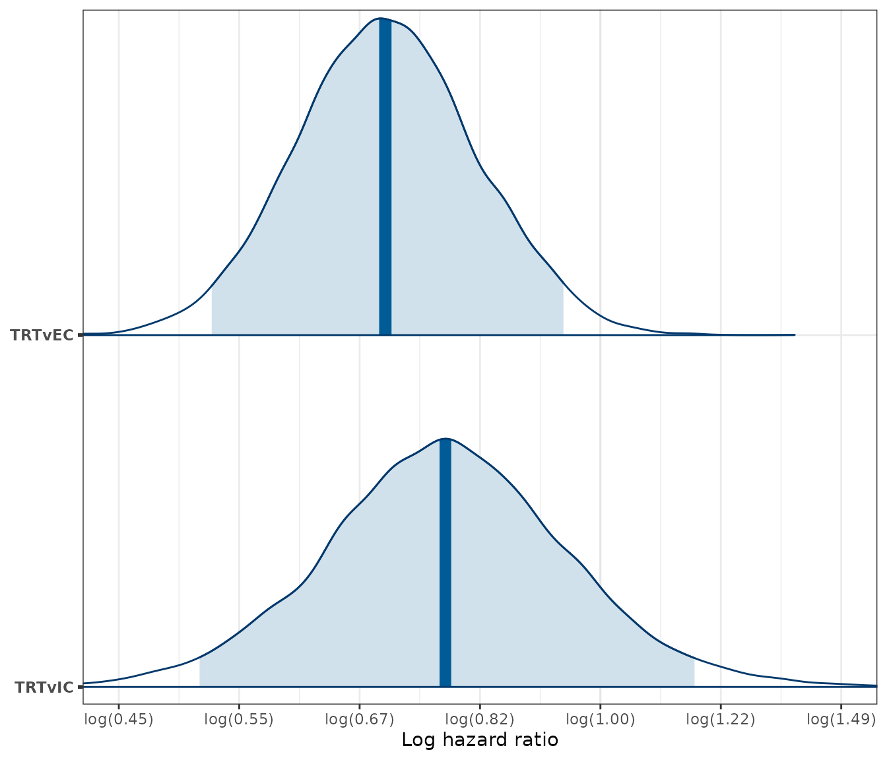
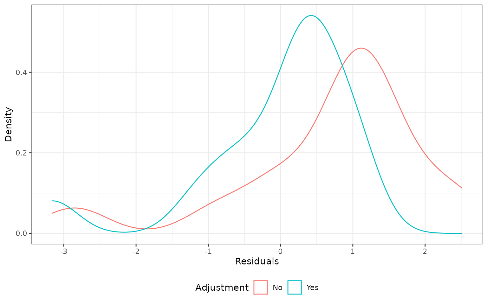
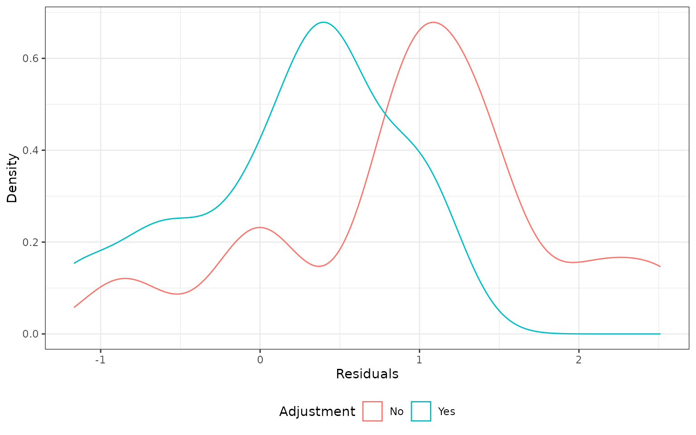
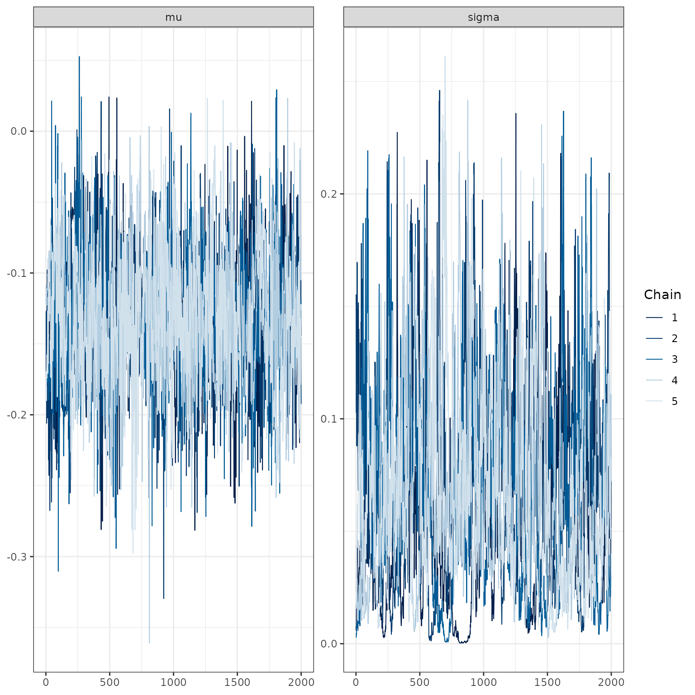
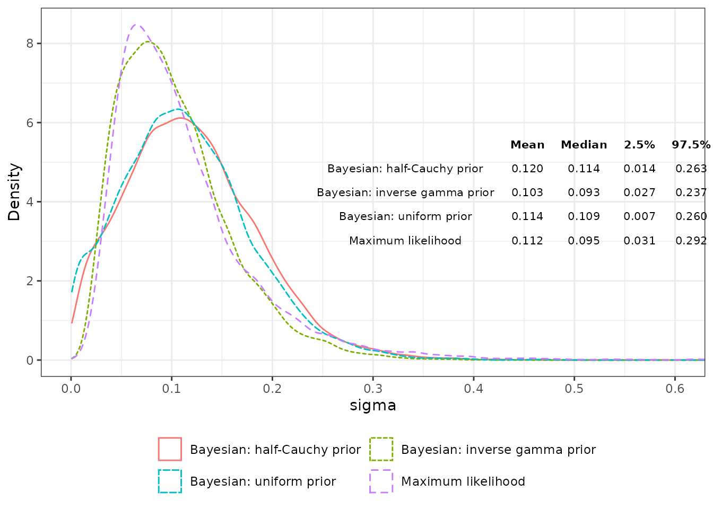

vignettes/06-ecmeta.Rmd
06-ecmeta.RmdThe objectives of this analysis is to apply the external control meta-analytic methodology (as described and implemented in the ecmeta package) to advanced non-small cell lung cancer (NSCLC). More specifically, we will use the 14 pairwise analyses as “reference studies” and show how they can be used to adjust log hazard ratio (HR) estimates from a single-arm trial (comparison of novel treatment arm with external control) for bias and variability. All estimates are based on the primary analysis detailed in vignette("04-ate-trt-ec").
The following R packages and settings are used.
We read in the estimated log HRs from the 14 pairwise analyses and combine them into a single data frame.
analysis <- readRDS("analysis-ic-ec.rds")
loghr <- bind_rows(
trt_ec = bind_rows(analysis$loghr_trt_ec, .id = "analysis_num"),
ic_ec = bind_rows(analysis$loghr_ic_ec, .id = "analysis_num"),
trt_ic = bind_rows(analysis$loghr_trt_ic, .id = "analysis_num"),
.id = "param"
)
rm(analysis)The meta-analytic methodology adjusts comparisons between the treatment arm and external control in a new study using the relationship,
\[ \lambda_{TRTvIC}^{new} = \lambda_{TRTvEC}^{new} - \lambda_{ICvEC}^{new}, \]
where \(\lambda_{TRTvIC}\), \(\lambda_{TRTvEC}\), and \(\lambda_{ICvEC}\) are the true log HRs for the treatment vs. internal control, treatment vs. external control, and internal control vs. external control, respectively. Under the assumption of proportional hazards, this relationship holds exactly for the true underlying hazard ratios. Here, we assess the extent to which it is a reasonable approximation for the estimated log hazard ratios, \(\hat{\lambda}\), in each study.
loghr_wide <- loghr %>%
select(param, analysis_num, estimate) %>%
pivot_wider(names_from = "param",
values_from = c("estimate")) %>%
mutate(`trt_ec - ic_ec` = trt_ec - ic_ec,
error = trt_ic - (trt_ec - ic_ec))
loghr_wide %>%
kbl() %>%
kable_styling() | analysis_num | trt_ec | ic_ec | trt_ic | trt_ec - ic_ec | error |
|---|---|---|---|---|---|
| 1 | -0.5503248 | -0.2573927 | -0.3166651 | -0.2929321 | -0.0237329 |
| 2 | -0.6109938 | -0.2503348 | -0.3225064 | -0.3606590 | 0.0381526 |
| 3 | -0.3460089 | -0.0918776 | -0.2651754 | -0.2541313 | -0.0110441 |
| 4 | -0.1135682 | -0.0105633 | -0.1274350 | -0.1030048 | -0.0244301 |
| 5 | 0.3826853 | 0.4613816 | -0.1144784 | -0.0786963 | -0.0357821 |
| 6 | 0.1126034 | -0.0909625 | 0.3247360 | 0.2035659 | 0.1211701 |
| 7 | 0.2892300 | 0.0597739 | 0.1377546 | 0.2294561 | -0.0917016 |
| 8 | -0.2779917 | -0.2748500 | 0.0729703 | -0.0031417 | 0.0761119 |
| 9 | -0.0826667 | -0.0977945 | 0.0256045 | 0.0151278 | 0.0104767 |
| 10 | -0.1518520 | -0.1879203 | 0.0383292 | 0.0360683 | 0.0022609 |
| 11 | 0.0848088 | -0.1656664 | 0.2395422 | 0.2504752 | -0.0109330 |
| 12 | -0.4469054 | -0.2435657 | -0.2416314 | -0.2033396 | -0.0382918 |
| 13 | -0.2867050 | -0.1606752 | -0.1443756 | -0.1260298 | -0.0183458 |
| 14 | -0.1505189 | 0.0248768 | -0.1439420 | -0.1753957 | 0.0314537 |
We can also express the relationship in terms of hazard ratios, \(HR\),
\[ HR_{TRTvIC}^{new} = \frac{HR_{TRTvEC}^{new}}{HR_{ICvEC}^{new}}. \]
loghr_wide %>%
mutate(across(where(is.double), .fns = exp)) %>%
rename(`error ratio` = error) %>%
kbl() %>%
kable_styling() | analysis_num | trt_ec | ic_ec | trt_ic | trt_ec - ic_ec | error ratio |
|---|---|---|---|---|---|
| 1 | 0.5767624 | 0.7730646 | 0.7285747 | 0.7460728 | 0.9765465 |
| 2 | 0.5428111 | 0.7785401 | 0.7243313 | 0.6972167 | 1.0388898 |
| 3 | 0.7075062 | 0.9122168 | 0.7670714 | 0.7755899 | 0.9890167 |
| 4 | 0.8926434 | 0.9894923 | 0.8803507 | 0.9021226 | 0.9758659 |
| 5 | 1.4662166 | 1.5862640 | 0.8918312 | 0.9243206 | 0.9648505 |
| 6 | 1.1191880 | 0.9130520 | 1.3836654 | 1.2257660 | 1.1288169 |
| 7 | 1.3353989 | 1.0615965 | 1.1476938 | 1.2579157 | 0.9123774 |
| 8 | 0.7573031 | 0.7596861 | 1.0756985 | 0.9968633 | 1.0790834 |
| 9 | 0.9206580 | 0.9068352 | 1.0259351 | 1.0152428 | 1.0105317 |
| 10 | 0.8591155 | 0.8286808 | 1.0390732 | 1.0367267 | 1.0022634 |
| 11 | 1.0885089 | 0.8473288 | 1.2706673 | 1.2846357 | 0.9891265 |
| 12 | 0.6396044 | 0.7838280 | 0.7853456 | 0.8160011 | 0.9624321 |
| 13 | 0.7507331 | 0.8515686 | 0.8655626 | 0.8815886 | 0.9818215 |
| 14 | 0.8602615 | 1.0251888 | 0.8659380 | 0.8391249 | 1.0319536 |
Consider a hypothetical new single-arm study that compared a novel treatment with an external control. The estimated HR is 0.7 and the standard error is set equal to the median of the standard error (0.148) from the references studies.
new_loghr_trt_ec <- loghr_data(
estimate = log(.7),
standard_error = median(loghr[loghr$param == "trt_ec", ]$se)
)In this example, we show how to use the reference studies to adjust the HR from this single-arm study for bias and variability.
An example analysis proceeds by first using the historical data to estimate the parameters of the meta-analytic model. The model estimates the log HR in a comparison of the internal and external control arms.
# Setup data
loghr_ic_ec <- as_loghr_data(
loghr[loghr$param == "ic_ec", ],
estimate = "estimate", standard_error = "se"
)
# Estimate the model
loghr_ecmeta <- ecmeta(
loghr_ic_ec, method = "jags",
n_iter = N_ITER, n_chains = N_CHAINS, n_burnin = N_BURNIN,
prior_scale = student_t(0, 25, 1)
)## Compiling model graph
## Resolving undeclared variables
## Allocating nodes
## Graph information:
## Observed stochastic nodes: 14
## Unobserved stochastic nodes: 16
## Total graph size: 80
##
## Initializing model
loghr_ecmeta## Iterations = 2001:4000
## Thinning interval = 1
## Number of chains = 5
## Sample size per chain = 2000
##
## param mean se_naive se_ts sd 2.5% 25%
## 1 mu -0.09739893 0.0005191603 0.001062963 0.05191603 -0.19940448 -0.12985346
## 2 sigma 0.11989791 0.0006494413 0.002969182 0.06494413 0.01356759 0.07282673
## 50% 75% 97.5% rhat
## 1 -0.09828602 -0.06511371 0.007326209 1.000389
## 2 0.11428862 0.16031204 0.262798236 1.006641
mcmc_hist(loghr_ecmeta, binwidth = .005)
\(\mu\) is an estimate of the bias of the external control relative to the internal control. The estimate is negative, \(\hat{\mu}\) = -0.098, which suggests that external control patients had, on average, shorter survival than trial controls, even after propensity score adjustment. The quantity, \(\hat{\sigma}\) = 0.114, is an estimate of the extent to which the log HRs vary across the reference studies.
An adjustment of the log HR is performed using the ecmeta::predict() function, which “predicts” \(\lambda_{TRTvIC}^{new}\), the true log HR (treatment vs. internal control), using (i) the meta-analytic model above and (ii) \(\hat{\lambda}_{TRTvEC}^{new}\), the estimates of the log HR (treatment vs. external control) from the single-arm study.
loghr_new <- predict(loghr_ecmeta, newdata = new_loghr_trt_ec)## Compiling model graph
## Resolving undeclared variables
## Allocating nodes
## Graph information:
## Observed stochastic nodes: 1
## Unobserved stochastic nodes: 1
## Total graph size: 9
##
## Initializing model
loghr_new## Posterior sampling was performed for the true log HR of the treatment
## relative to the external control ('loghr_trt_ec') with the following settings:
##
## Iterations = 1:2000
## Thinning interval = 1
## Number of chains = 5
## Sample size per chain = 2000
##
## The estimates of 'mu' and 'sigma' were used to draw the true log HR of the
## internal control relative to the external control ('loghr_ic_ec'), which was
## in turn, used to adjust 'log_trt_ec' to obtain the predicted log HR
## for the treatment relative to a hypothetical internal control ('loghr_trt_ic').
##
## Summaries of the posterior distributions are displayed below:
## param mean se_naive sd 2.5% 25%
## 1 loghr_trt_ic -0.25724458 0.002071504 0.2071504 -0.6658046 -0.3892399
## 2 loghr_trt_ec -0.35565173 0.001495050 0.1495050 -0.6456964 -0.4569179
## 3 loghr_ic_ec -0.09840715 0.001457516 0.1457516 -0.3989943 -0.1718717
## 50% 75% 97.5% rhat
## 1 -0.2577993 -0.12613466 0.15638402 NA
## 2 -0.3573240 -0.25689634 -0.06143809 1.000037
## 3 -0.1003744 -0.02649346 0.20936848 NAIt is perhaps more convenient to summarize the HRs.
summary(loghr_new, exponentiate = TRUE)## param mean se_naive sd 2.5% 25% 50%
## 1 hr_trt_ic 0.7899704 0.001667533 0.1667533 0.5138599 0.6775717 0.7727503
## 2 hr_trt_ec 0.7086090 0.001068986 0.1068986 0.5242973 0.6332323 0.6995458
## 3 hr_ic_ec 0.9160820 0.001388708 0.1388708 0.6709945 0.8420872 0.9044987
## 75% 97.5% rhat
## 1 0.8814961 1.1692752 NA
## 2 0.7734484 0.9404112 1.000037
## 3 0.9738544 1.2328992 NAThe mean of the true HR is pushed upwards because internal control patients tended to survive longer than the external control patients (\(\hat{\mu}\) = -0.098). Furthermore, confidence intervals are larger for the true HR because of the variance of the estimates of \(\lambda_{ICvEC}\) across the reference studies (\(\hat{\sigma}\) = 0.114).
We can also plot posterior densities of the hazard ratios using the bayesplot package.
loghr_seq <- seq(-.8, .4, by = .2)
loghr_labs <- paste0(
"log(",
formatC(exp(loghr_seq), format = "f", digits = 2),
")"
)
mcmc_areas(loghr_new, pars = c("trt_ic", "trt_ec"),
point_est = "median", prob = .95) +
scale_y_discrete(labels = c("trt_ic" = "TRTvIC", "trt_ec" = "TRTvEC"),
expand = expansion(add = .05)) +
scale_x_continuous(breaks = loghr_seq, labels = loghr_labs) +
xlab("Log hazard ratio") +
coord_cartesian(xlim = c(min(loghr_seq), max(loghr_seq)))
We check the model using leave-one-out cross validation (LOO CV) in which we use one of the reference studies for “testing” and the remaining for “training”. Since there are 14 reference studies, LOO CV produces 14 predictions, which we call \(\hat{y}\). Predictions are made in two ways: first, “unadjusted” predictions are made using \(\hat{y}=\hat{\lambda}_{TRTvEC}^{new}\), and second, adjusted predictions are made using \(\hat{y} = E(\lambda_{TRTvIC}^{new})\). In the adjusted case, the meta-analytic model is fit to the training data using ecmeta::ecmeta() and predictions are made on the test set with ecmeta::predict.ecmeta()
ecmeta_cv <- ecmeta_lpo_cv(
data = loghr, p = 1,
method = "jags",
ecmeta_args = list(n_chains = 5, n_iter = 1000)
)We compute residuals as \(y - \hat{y}\) and plot the density of the residuals. The unadjusted method produced results that are more biased (external control patients tend to have shorter survival than internal control patients), although neither method produces density functions that are centered at zero.
plot_residual <- function(cv) {
ggplot(cv, aes(x = std_residual, col = adjust)) +
geom_density() +
xlab("Residuals") +
ylab("Density") +
scale_color_discrete(name = "Adjustment") +
theme(legend.position = "bottom")
}
plot_residual(ecmeta_cv)
The distribution is not symmetric and has a longer right tail. This seems to be primarily caused by the 5th reference study for which \(\hat{\lambda}_{ICvEC}^{new}\) was much larger than 1 (i.e., the external control patients lived longer than internal control patients). Removing this study results in a density plot that resembles a normal distribution, although it is still not centered at zero.
plot_residual(ecmeta_cv[ecmeta_cv$iteration != 5, ])
Note that the mean residual is closer to zero than the median residual.
ecmeta_cv %>%
group_by(adjust) %>%
summarize(mean_residual = mean(residual),
median_residual = median(residual))## # A tibble: 2 × 3
## adjust mean_residual median_residual
## <chr> <dbl> <dbl>
## 1 No 0.0931 0.149
## 2 Yes -0.00450 0.0572We can also use a QQ-plot to compare standardized residuals to those from a theoretical normal distribution. Residuals were standardized by dividing them by the standard deviation of \(\hat{\lambda}_{TRTvIC}^{new}\).
ggplot(ecmeta_cv %>%
mutate(adjustf = paste0("Adjust = ", adjust)),
aes(sample = std_residual)) +
stat_qq() +
geom_abline(slope = 1,intercept = 0) +
facet_wrap(~adjustf) +
xlab("Theoretical (normal distribution)") +
ylab("Actual residuals")
loghr_ecmeta_no5 <- ecmeta(
loghr_ic_ec[-5, ],
n_chains = N_CHAINS, n_iter = N_ITER, n_burnin = N_BURNIN,
method = "jags",
prior_scale = student_t(0, 25, 1))## Compiling model graph
## Resolving undeclared variables
## Allocating nodes
## Graph information:
## Observed stochastic nodes: 13
## Unobserved stochastic nodes: 15
## Total graph size: 75
##
## Initializing model
loghr_ecmeta_no5## Iterations = 2001:4000
## Thinning interval = 1
## Number of chains = 5
## Sample size per chain = 2000
##
## param mean se_naive se_ts sd 2.5% 25%
## 1 mu -0.1322965 0.0004364043 0.001619700 0.04364043 -0.220139702 -0.15974147
## 2 sigma 0.0670363 0.0004276455 0.002362741 0.04276455 0.005430164 0.03443469
## 50% 75% 97.5% rhat
## 1 -0.13195828 -0.10430584 -0.04433135 1.001890
## 2 0.06087713 0.09179799 0.16786937 1.008979
mcmc_trace(loghr_ecmeta_no5)
# Inverse gamma prior
loghr_ecmeta_ig <- ecmeta(
loghr_ic_ec, method = "jags",
n_iter = N_ITER, n_chains = N_CHAINS, n_burnin = N_BURNIN,
prior_scale = invgamma(0.001, 0.001),
quiet = TRUE
)
# Uniform prior
loghr_ecmeta_unif <- ecmeta(
loghr_ic_ec, method = "jags",
n_iter = N_ITER, n_chains = N_CHAINS, n_burnin = N_BURNIN,
prior_scale = uniform(0, 100),
quiet = TRUE
)
# Maximum-likelihood approach
loghr_ecmeta_ml <- ecmeta(
loghr_ic_ec, method = "ml"
)
# Posterior distributions by combining chains
sigma_post_hc <- c(as.array(loghr_ecmeta)[,, "sigma"])
sigma_post_ig <- c(as.array(loghr_ecmeta_ig)[,, "sigma"])
sigma_post_unif <- c(as.array(loghr_ecmeta_unif)[,, "sigma"])
sigma_post_ml <- rnorm(
N_ITER * N_CHAINS,
loghr_ecmeta_ml$estimates["logsigma"],
sqrt(loghr_ecmeta_ml$vcov["logsigma", "logsigma"])
) %>%
exp()
# Combine into single object for plotting
sigma_post <- data.frame(
label = c(
rep("Bayesian: half-Cauchy prior", length(sigma_post_hc)),
rep("Bayesian: inverse gamma prior", length(sigma_post_ig)),
rep("Bayesian: uniform prior", length(sigma_post_unif)),
rep("Maximum likelihood", length(sigma_post_unif))
),
value = c(sigma_post_hc, sigma_post_ig, sigma_post_unif, sigma_post_ml)
)
# Plot
tbl <- as_tibble(sigma_post) %>%
group_by(label) %>%
summarize(
Mean = round(mean(value), 3),
Median = round(median(value), 3),
`2.5%` = round(quantile(value, .025), 3),
`97.5%` = round(quantile(value, .975), 3)
)
colnames(tbl)[1] <- ""
ggplot(sigma_post, aes(x = value, colour = label, linetype = label)) +
geom_density() +
scale_x_continuous(breaks = seq(0, .6, .1)) +
scale_colour_discrete("") +
scale_linetype_discrete("") +
coord_cartesian(xlim = c(0, .6)) +
xlab("sigma") +
ylab("Density") +
theme(legend.position = "bottom", legend.box = "vertical") +
guides(colour = guide_legend(nrow = 2, byrow = TRUE)) +
annotation_custom(
tableGrob(
tbl, rows = NULL,
theme = ttheme_minimal(base_size = 8)
),
xmin = 0.25
) 